Muitos dos temas aqui abordados lhe parecerão familiares. Isso porque são conceitos que servem de base para diversas áreas do design, incluindo o design de interiores. Fundamentos como alinhamento, espaço, forma, linhas e padrões são elementos importantes no layout de um ambiente, por exemplo, assim como são imprescindíveis na composição de uma peça gráfica, seja uma apresentação de slides, seja um portfólio, um site ou um cartão de visitas.
“Composição” no design gráfico nada mais é do que combinar os elementos e os fundamentos visuais em um determinado espaço ou campo visual. Neste material, você terá acesso aos conceitos base, para que o layout da sua apresentação de projeto seja bem compreendido por todos os públicos, independentemente do conhecimento sobre design, concentrando forma e cor para entregar uma mensagem de forma integral, direta e subliminarmente.
O ponto é o menor elemento de uma composição. Sozinho, é o centro da atenção sobre o plano.
Observe o exemplo na figura 1. Na capa de apresentação de um projeto de design de interiores, coloca-se a marca de forma centralizada, em destaque. Olhando pelo todo, é o menor elemento da composição. Sozinha, ela é o centro de atenção sobre o plano.
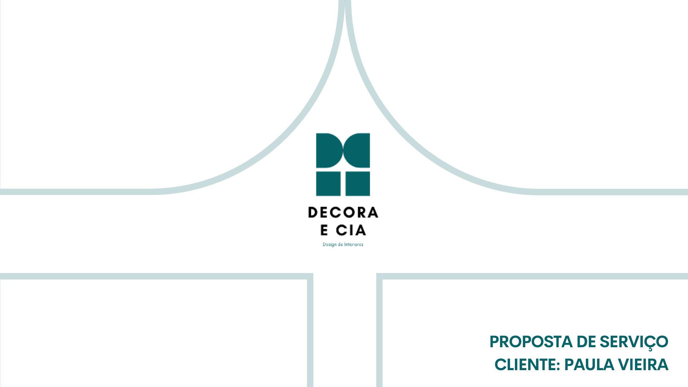
Figura 1 – Capa de apresentação
Fonte: Senac EAD (2023)
Capa de slide de apresentação de projeto de design de interiores, com a marca do escritório Decora e Cia centralizada no meio do slide. Em torno da marca, observam-se linhas que representam pedaços da forma da marca, em verde mais claro. No canto inferior direito, em caixa-alta, está escrito o título da apresentação, chamado “Proposta de serviço. Cliente Paula Vieira”.
A linha é conceitualmente uma sucessão de pontos, em que não se pode identificar esses pontos separadamente. A linha conceitualmente não tem fim. Quando uma linha tem início e fim, chama-se segmento de linha.
Observe novamente a capa de proposta de design. São linhas representando pedaços da marca do escritório Decora e Cia.
Figura 2 – Capa de apresentação
Fonte: Senac EAD (2023)
Capa de slide de apresentação de projeto de design de interiores, com a marca do escritório Decora e Cia centralizada no meio do slide. Em torno da marca, observam-se linhas que representam pedaços da forma da marca, em verde mais claro. No canto inferior direito, em caixa-alta, está escrito o título da apresentação, chamado “Proposta de serviço. Cliente Paula Vieira”.
É possível ter linhas de diversas espessuras e formas, podendo ser grossas ou finas, com formas orgânicas ou irregulares, dando a possibilidade de criar diversos estilos e orientações de leitura, como na figura 3, em que as formas orgânicas no slide orientam para uma fluidez e ordem de leitura das informações.
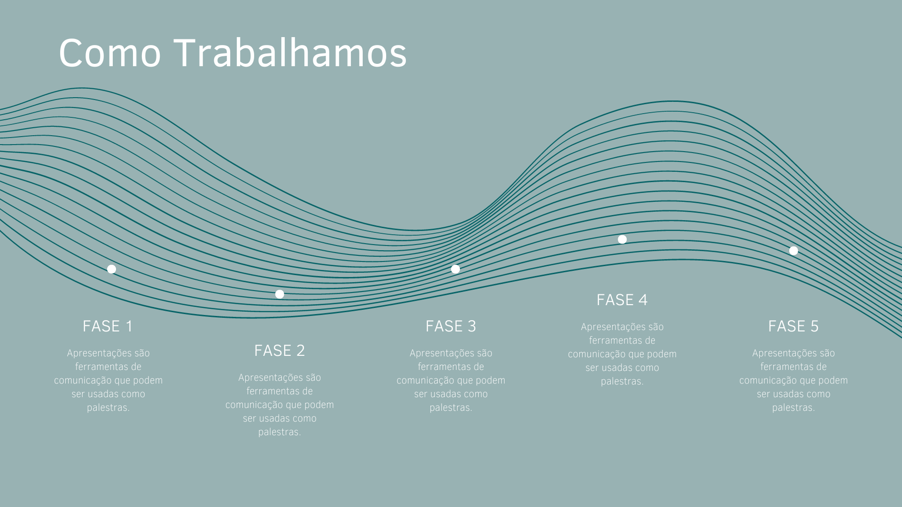
Figura 3 – Slide apresentação de serviços da empresa
Fonte: Senac EAD (2023)
Slide com fundo verde-claro e linhas paralelas em formas orgânicas, formando ondas, no meio da página, criando uma fluidez e ordem na leitura dos tipos de serviços ofertados pelo escritório de design.
Também é possível utilizar as linhas para criar divisões no texto e organizar a visão do espectador.
Ao usar as linhas, cuide aspectos como cor, espessura, textura e estilo. Esses fatores podem alterar a forma como o seu layout será percebido.
Você encontrará vários conceitos para “forma”. Porém, o conceito da Gestalt será o escolhido, por ser mais comum ao assunto “design”. A forma é aquilo que se percebe do objeto visual. Para Gomes Filho (2008, p. 39), o estudo conceitual da forma se divide em ponto, linha, plano, volume e mais duas configurações, a real e a esquemática.
Observe a figura a seguir:
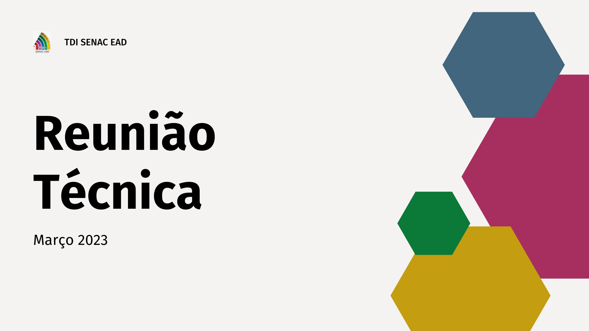
Figura 4 – Slide de capa de reunião de equipe
Fonte: Senac EAD (2023)
Slide com fundo branco off white, contendo título do lado esquerdo e formas hexagonais coloridas, de diversos tamanhos, do lado direito.
Nesse slide de capa de apresentação, é possível observar formas hexagonais do lado direito, em diferentes tamanhos. As formas têm as cores institucionais da empresa, têm diferentes formatos e criam destaque visual ao título da apresentação, uma espécie de moldura lateral ao título.
Além de destacar, as formas podem ajudar a organizar conteúdos, criar ilustrações simples ou deixar o trabalho mais interessante. Use e abuse desses elementos visuais.
Para o design, a direção está ligada à atenção de quem observa o projeto. Dependendo da direção das linhas do projeto, é possível direcionar ou chamar a atenção do observador.
Observe o exemplo:
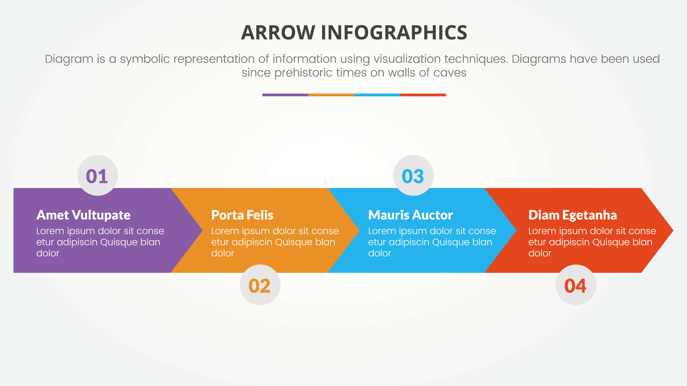
Figura 5 – Slide com infográfico em seta para a direita
Fonte: Freepik (c2023a)
Slide contendo infográfico com setas, demarcando uma ordem de leitura para obter as informações. Dentro de cada seta é possível observar as informações, em ordem para leitura.
Na figura 5, há um infográfico que apresenta setas alinhadas lado a lado, direcionadas para a direita, com informações de texto internas. Essa direção dada instrui quanto à ordem de leitura, fazendo com que o usuário realize a leitura da esquerda para a direita.
Agora, observe um outro exemplo de infográfico em formato de linha do tempo:
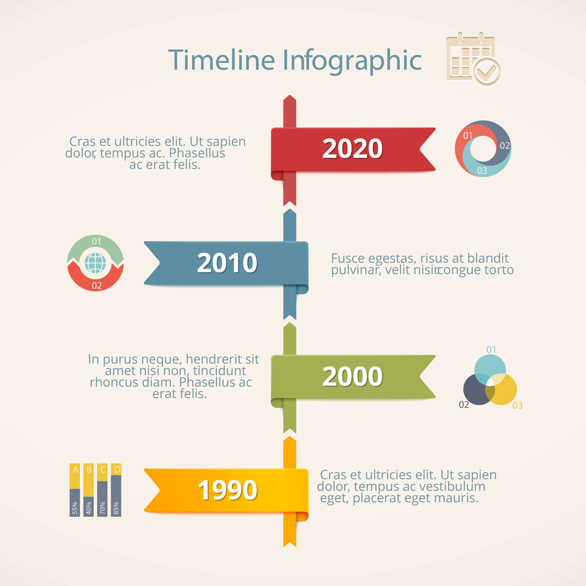
Figura 6 – Slide com infográfico de linha do tempo
Fonte: Freepik (c2023b)
Infográfico de linha do tempo, datando de 1990 até 2020, com os anos divididos em linha vertical, apontando com setas, de baixo para cima.
Portanto, no design gráfico, a direção pode ser utilizada de forma objetiva, conduzindo o observador para receber a mensagem conforme a vontade da criação da peça apresentada.
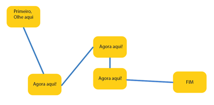
Figura 7 – Direção
Fonte: Senac EAD (2023)
Imagem de um fluxograma, conduzindo a atenção de quem a lê de um lado para outro.
Dimensão e escala são elementos que andam juntos. No entanto, serão estudados separadamente, para manter uma linha de pensamento mais estruturada.
Dimensão é, em qualquer sentido, referente ao tamanho. Também se refere à medida e ao volume.
Por exemplo, na figura a seguir, foram usadas formas hexagonais com diferentes dimensões.
Figura 8 – Slide de capa de reunião de equipe
Fonte: Senac EAD (2023)
Slide com fundo branco off white, contendo título do lado esquerdo e formas hexagonais coloridas, de diversos tamanhos, do lado direito.
Quando se fala de escala no design gráfico, não é no mesmo sentido do conhecimento de escala nos projetos de design de interiores. No layout gráfico, a escala tem a função de criar ênfase, dar destaque, criar percepção dramática e auxiliar em outro elemento: a hierarquia. Observe a imagem a seguir:
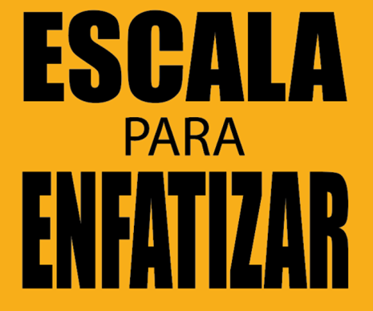
Figura 9 – Escala
Fonte: Senac EAD (2023)
Retângulo amarelo-ouro, contendo o texto "escala para enfatizar". O texto está em fonte sem serifa, na cor preta, com justificação centralizada e com uma palavra escrita em cada linha. As palavras "escala" e "enfatizar" estão em tamanho maior e em negrito, para dar destaque.
Essa relação de escala, obviamente, pode ser usada para dar sentido de proporção. Por exemplo, imagine um pequeno cachorro Pug ao lado de um outro cão Fila. Seria estranho ver o Pug maior que o Fila, ou seja, o sentido de tamanho também serve para explicar esse elemento.
O movimento pode ser utilizado para dar sensação de ação a uma expressão gráfica. Observe o exemplo a seguir:
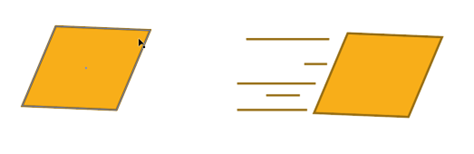
Figura 10 – Quadro estático e em movimento
Fonte: Senac EAD (2023)
Imagem de dois quadriláteros inclinados, lado a lado. O quadrilátero da direita tem linhas horizontais próximas, para dar sensação de movimento.
No quadrilátero da esquerda, há apenas uma figura estacionária; já no quadrilátero da direita, foram aplicadas linhas horizontais, imprimindo movimento e velocidade para o elemento.
Não apenas linhas, mas vários elementos podem ser usados para dar essa sensação de movimento. Pontos, linhas onduladas, borrões. Tudo depende do todo da peça que está sendo criada.
A textura está ligada às sensações, à percepção que se tem de uma superfície. É possível transmitir aspectos de textura tátil real ou visual.
A textura tátil real está conectada com a experiência de toque e pode ser de efeito natural (madeira, folhas, pedras) ou de efeito artificial (metal escovado, técnico, plástico).
Figura 11 – Tronco de árvore
Fonte: Pixabay (2013)
Tronco de árvore cortado, mostrando os nós e os veios da madeira.
Figura 12 – Metal escovado
Fonte: Pixabay (2014)
Metal claro prateado, escovado.
Já a textura visual ou gráfica tem por objetivo preencher uma superfície, imitando texturas naturais ou artificiais. Ainda existem as texturas que não pretendem imitar materiais, mas apenas criar padronagens. Podem ser textura visuais geométricas (formas retas, curvas) ou texturas visuais orgânicas, que imitam padrões da natureza.
Figura 13 – Textura visual geométrica
Fonte: Roenkae (2019)
Padrão geométrico com espaços grandes divididos por linhas, com preenchimentos de cores amarela, preta, cinza e lilás.
Figura 14 – Textura visual orgânica
Fonte: Ehlers (2020)
Textura visual orgânica, com fundo preto, desenhos de folhas verdes claras e flores vermelhas com miolo rosa.
Na apresentação de portfólio ou de projetos, o designer de interiores consegue utilizar texturas como fundo em seus slides, desde que tenha conexão com a identidade visual do seu escritório ou da proposta. No exemplo a seguir, há uma textura visual orgânica, imitando o bambu, que cria um fundo interessante para a apresentação dos conceitos de projeto propostos pelo escritório. Percebe-se uma conexão com o que está sendo dito na apresentação, uma coesão.
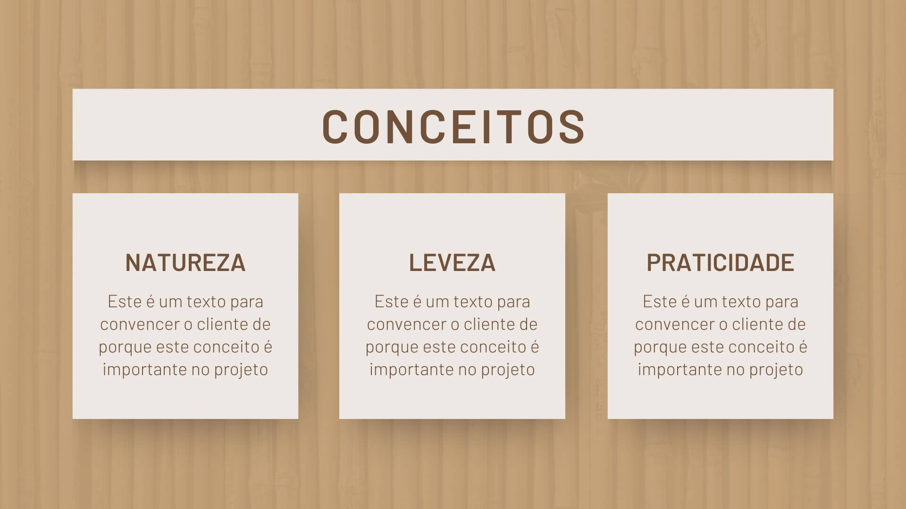
Figura 15 – Apresentação com fundo em bambu
Fonte: Senac EAD (2023)
Apresentação de slide, com fundo em textura visual orgânica, reproduzindo bambus. O título do slide é “Conceitos”. Logo abaixo, tem três caixas de texto, cada uma com os seguintes títulos: “Natureza”, “Leveza” e “Praticidade”.
Outro momento em que texturas são aplicadas em apresentações de design de interiores é na ocasião de demonstração do moodboard, um painel criativo em que o conceito e as escolhas do projeto são apresentados. Demonstrar as texturas, as padronagens e as cores especificadas auxilia o cliente a entender a sua proposta.
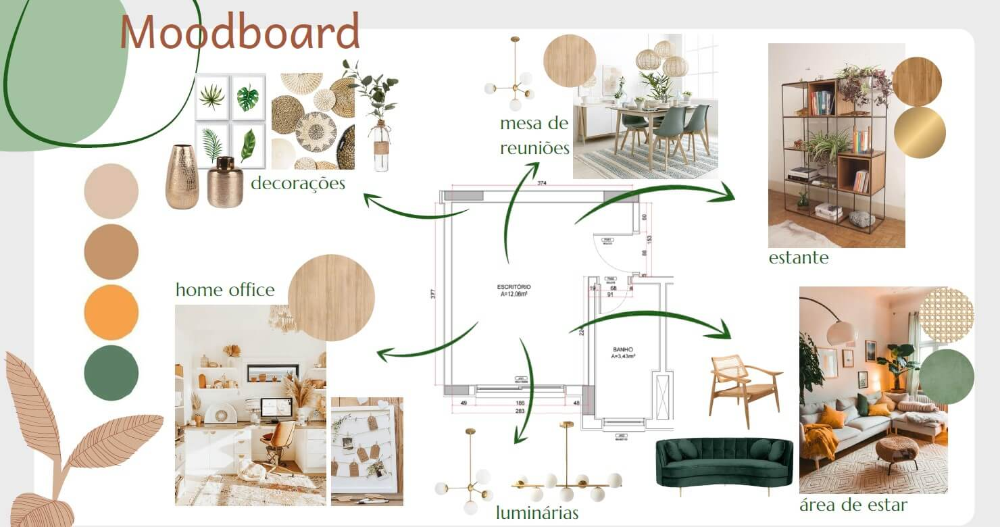
Figura 16 – Moodboard de uma sala com home office
Fonte: Senac EAD (2023)
Painel de moodboard do projeto de um home office, apresentando as escolhas de decoração, a mesa de reuniões, a estante, a área de estar e o espaço de home office, com cores, texturas e imagens referenciais.
É importante o uso de todos os elementos, não é mesmo? Agora, que tal aprofundar mais o conhecimento, entendendo quais são os fundamentos da composição de design gráfico? Siga a sua leitura!
O equilíbrio é relativo a uma referência visual de uma base, obedecendo um centro de gravidade. Essa percepção inerente aos humanos é automática, pois o inconsciente transfere o instinto de manter-se de pé para a representação gráfica a que se destina. A falta de equilíbrio tem uma tendência a entregar desconforto para o observador, sendo o equilíbrio, portanto, um elemento muito importante a ser observado.
Observe a figura a seguir:
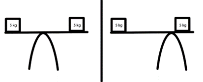
Figura 17 – Equilíbrio
Fonte: Senac EAD (2023)
Duas gangorras, cada uma equilibrando pesos iguais em ambos os lados, porém em uma das imagens estão perfeitamente equilibrados e na outra o peso está claramente fora do equilíbrio, mas a gangorra permanece equilibrada, mostrando incongruência visual entre o que se informa e o que se lê.
A figura mostra esse elemento claramente. Enquanto no lado esquerdo a gangorra está equilibrada, segundo o que se espera no mundo físico, no desenho da direita a mesma gangorra desafia a gravidade. No mundo físico, é impossível que, naquela disposição, a balança fique equilibrada. Esse desafio das leis naturais causa um desconforto visual no espectador.
Claro que existe a possibilidade de que essa representação desequilibrada seja justamente a intenção do seu autor. Porém, nesse caso, é muito provável que exista um bom motivo para a quebra do elemento.
Veja um exemplo prático no dia a dia das apresentações de projeto. Observe as duas apresentações a seguir e marque qual dos slides lhe transmite uma sensação de equilíbrio:
Figura 18 – Slide com fluxograma
Fonte: Senac EAD (2023)
Slide com fundo preto e fluxograma de definição de metas, apresentando simetria entre os lados esquerdo e direito na distribuição dos dados.
Figura 19 – Slide com apresentação
Fonte: Senac EAD (2023)
Slide com fundo em bege-escuro, contendo três imagens em desalinho, distribuídas aleatoriamente na apresentação, assim como as caixas de texto que explicam cada imagem.
É importante destacar que o equilíbrio não é necessariamente simétrico, ou seja, não há necessidade de que, na apresentação, as imagens sejam idênticas do lado esquerdo e do lado direito. É possível equilibrar peso visual, utilizando recursos como a regra dos terços. Na regra dos terços, há uma divisão em duas linhas horizontais e duas linhas verticais, criando uma grade de 3x3. As áreas onde as linhas se cruzam tornam-se pontos focais no seu design. Se você inserir, por exemplo, o ponto focal da imagem em uma das linhas da grade ou próximo dela, criará um equilíbrio visual com o restante do espaço. A regra dos três terços é um recurso amplamente usado inclusive na fotografia. Perceba na figura a seguir:
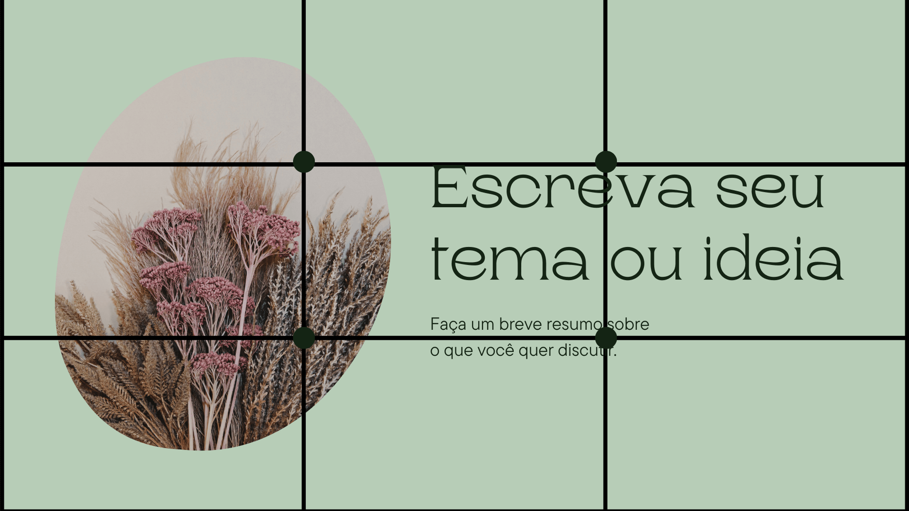
Figura 20 – Slide com apresentação de tema ou ideia
Fonte: Senac EAD (2023)
Slide com fundo em verde-claro, dividido na regra dos três terços, com a imagem de uma flor, dentro de uma forma orgânica, posicionada mais à esquerda da tela, em cima da linha vertical da esquerda, na regra dos três terços.
A apresentação do slide está equilibrada dentro da regra dos três terços, pois há uma imagem, em formato orgânico, seguindo uma das linhas verticais dos quadrantes, criando um peso visual e permitindo um equilíbrio no restante do espaço.
O elemento tensão para a composição é relativo à organização e tem a intenção de criar instabilidade visual. Resumindo, é uma perturbação na expressão gráfica que afeta o equilíbrio.
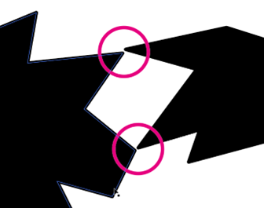
Figura 21 – Tensão acidental de formas geométricas
Fonte: Senac EAD (2023)
Duas formas geométricas na cor preta, em formato aleatório, expostas em um fundo branco, com dois pontos das formas quase se tocando, causando tensão visual acidental.
A intenção da tensão no design gráfico pode ser causar desconforto de forma proposital ou acidental. Na figura acima, é possível observar dois elementos gráficos jogados acidentalmente em um fundo branco, criando pontos de tensão sem sentido aparente.
Agora, observe figura a seguir:
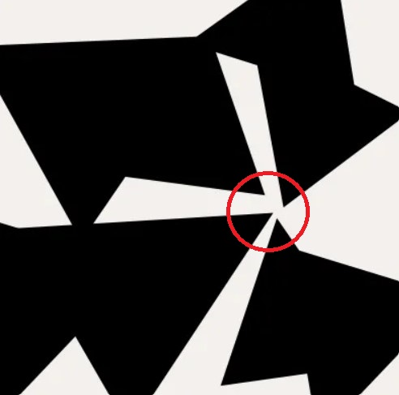
Figura 22 – Tensão proposital de formas geométricas
Fonte: Traini (2020)
Quatro formas geométricas pretas com formato aleatório, em um fundo branco, próximas, ao ponto que suas extremidades mais pontiagudas quase se tocam, em uma mesma direção, criando um ponto focal, propositalmente.
Portanto, quando bem pensada, a tensão pode ser aliada para chamar a atenção ou criar hierarquia visual em uma apresentação.
Nivelamento é aquilo que aparenta estabilidade. O elemento nivelado é previsível e harmônico dentro da composição. É o oposto ao inesperado. Composições que buscam o nivelamento são visualmente mais estáticas e não são propensas a conflitos ou tensões visuais. Tendem a buscar a parte inferior da peça como base, centralizando o peso visual como uma base mais sólida.
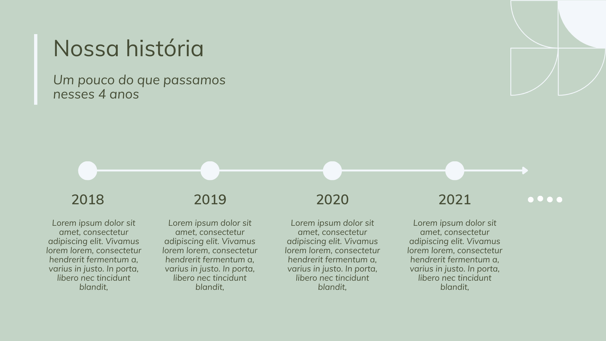
Figura 23 – Apresentação com uso do fundamento de nivelamento
Fonte: Senac EAD (2023)
Página de apresentação com fundo verde-claro, contendo quatro caixas de texto niveladas pela parte inferior delas, na parte inferior do slide.
Na imagem acima, observe que as caixas de texto estão niveladas pela parte inferior, mantendo uma organização visual. Não há tensão visual.
O aguçamento pode ser equivalente ao contraste, enquanto o nivelamento está mais para a harmonia. O aguçamento é uma ruptura na estrutura nivelada de uma construção gráfica.
Observe a variação de capa de apresentação na figura a seguir. Perceba que a marca foi deslocada do centro, ficando fora dos eixos horizontal e vertical, criando um aguçamento, um destaque.
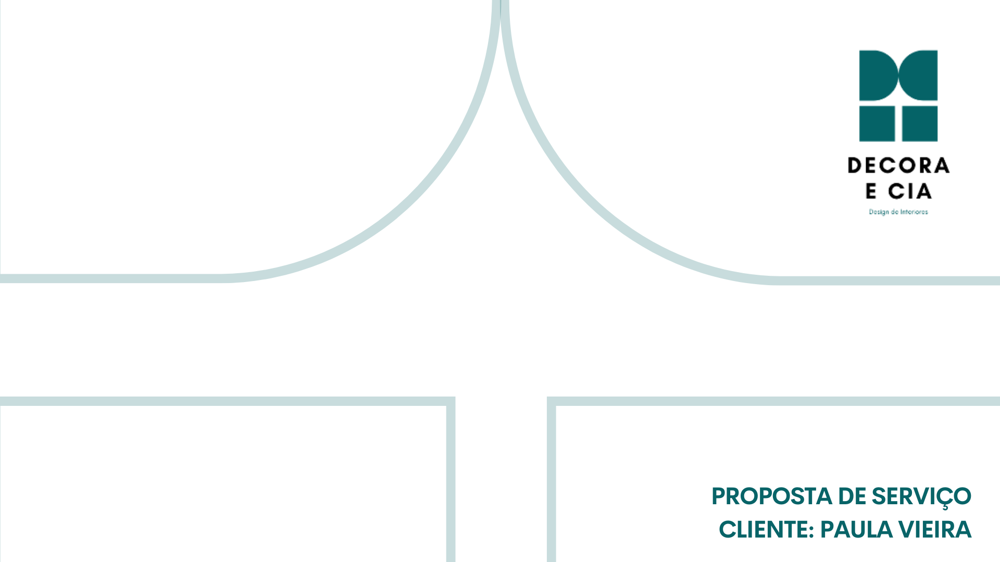
Figura 24 – Capa de apresentação
Fonte: Senac EAD (2023)
Capa de slide de apresentação de projeto de design de interiores, com a marca do escritório Decora e Cia, posicionada no canto superior direito. Centralizado no slide, observam-se linhas que representam pedaços da forma da marca, em verde mais claro. No canto inferior direito, em caixa-alta, está escrito o título da apresentação, chamado “Proposta de serviço. Cliente Paula Vieira”.
É difícil estabelecer qual é mais importante, atração ou agrupamento, uma vez que a atração interfere nas relações visuais. Observe a figura a seguir:
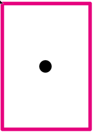
Figura 25 – Atração e agrupamento
Fonte: Senac EAD (2023)
Tela retangular vertical com um ponto único ao centro.
Observe que a tela tem um único ponto ao centro. Não há atração de nenhum elemento, assim como não há agrupamento. Como explica Dondis (2015, p. 44), “permanece só, e a relação é um estado moderado de intermodificação entre ele e o quadrado”.
Então, quando há mais elementos, contando com sua disposição, a atração e o agrupamento tendem a preencher lacunas para que uma mensagem seja entregue ao observador.
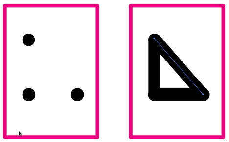
Figura 26 – Atração e agrupamento
Fonte: Senac EAD (2023)
Duas telas verticais, lado a lado. Do lado esquerdo, a tela tem somente pontos dispostos. E a tela do lado direito conecta os pontos por meio de uma linha, formando um triângulo.
Note que, no primeiro quadro, o observador tende a fechar os pontos em sua percepção. São três pontos, mas a tendência é fechá-los visualmente. A imagem ao lado demonstra o que é essa percepção.
Enquanto na fotografia entende-se positivo e negativo como a impressão da imagem obtida e o registro da imagem em material fotossensível, a dinâmica do que é positivo e negativo para o design gráfico é diferente, tendo relação com a atenção sobre a imagem, obtida por meio da tensão visual. A luz, ou a ausência dela, é trocada pela percepção do objeto que tem maior destaque e do objeto que tem menor destaque. Aqui, o que domina a atenção é compreendido como o elemento positivo. Já todo o restante dos elementos, que apresenta a mensagem de maneira mais passiva, é considerado o elemento negativo.
A cor é irrelevante nesse conceito. O objeto que chama mais a atenção do observador é sempre o elemento positivo.
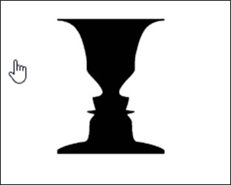
Figura 27 – Positivo e negativo
Fonte: adaptado de Psicoativo (2017)
Imagem em preto e branco, onde se pode ter uma dupla percepção visual. OU visualizam-se duas faces humanas, na cor branca, de perfil, frente a frente, em um fundo preto; OU é possível visualizar um cálice na cor preta, sobre um fundo branco.
O que é importante mostrar? Em uma foto, há sempre um assunto, um ponto da imagem onde se observa o que é mais importante para o registro. Tudo ao redor torna-se visão periférica e, portanto, menos importante para a mensagem. O enquadramento começa aí. Por meio do enquadramento, escolhe-se a posição do assunto e define-se como será entregue a mensagem, valorizando os elementos desejados e garantindo a ênfase do assunto.
É possível utilizar enquadramentos físicos em sua apresentação, como molduras para textos ou elementos gráficos, aprimorando componentes específicos do seu layout.
Que tal ver na prática? Observe as capas de apresentação de escritório a seguir. Clique na capa que você considera que o título está com melhor destaque.
Figura 28 – Exemplo 1 de capa de apresentação de projeto de design de interiores
Fonte: Senac EAD (2023)
Capa de apresentação de projeto de design de interiores, contendo a imagem em tela cheia de uma sala de estar, com uma caixa de texto de fundo bege-claro posicionada no canto superior direito, com texto centralizado, em fonte sem serifa, na cor fendi, com as seguintes palavras escritas: Apresentação de projeto. Design de interiores.
Figura 29 – Exemplo 2 de capa de apresentação de projeto de design de interiores
Fonte: Senac EAD (2023)
Capa de apresentação de projeto de design de interiores, contendo a imagem em tela cheia de uma sala de estar, contendo texto posicionado no canto superior direito, centralizado, em fonte sem serifa, na cor branca, com as seguintes palavras escritas: Apresentação de projeto. Design de interiores.
O que é mais importante para a mensagem? O que entrega mais rapidamente a ideia central da peça que está sendo criada? Ao responder a essa questão durante a construção de uma peça gráfica, você estará estabelecendo uma hierarquia do que é mais importante. A partir desse ponto, os outros elementos preencherão o restante da área da peça.
Por exemplo: na imagem a seguir, observe que o título da apresentação foi centralizado em uma única caixa de cor, que “abraça” as três caixas de texto logo abaixo. Portanto, criou-se uma hierarquia visual, destacando que o título da apresentação é “Conceitos” e que os subtítulos são “Natureza”, “Leveza” e “Praticidade”.
Figura 30 – Apresentação com título centralizado
Fonte: Senac EAD (2023)
Apresentação de slide com fundo em textura visual orgânica, reproduzindo bambus. O título do slide é “Conceitos”. Logo abaixo, há três caixas de texto, cada uma com os seguintes títulos: “Natureza”, “Leveza” e “Praticidade”.
Que tal testar os conhecimentos? Clique no desafio a seguir, sobre composição.

E assim você finalizou o estudo sobre composição no design gráfico. Esse é um aprendizado muito importante que trará benefícios em suas apresentações, tanto para clientes quanto para futuros recrutadores de emprego. Lembre-se de que tudo no design tem um porquê; não é apenas por beleza.
Até a próxima!